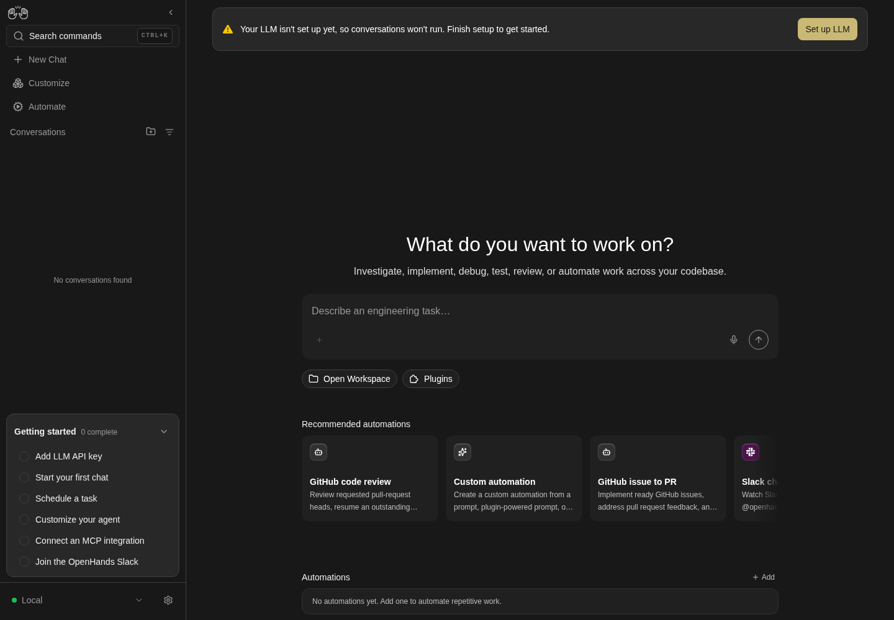
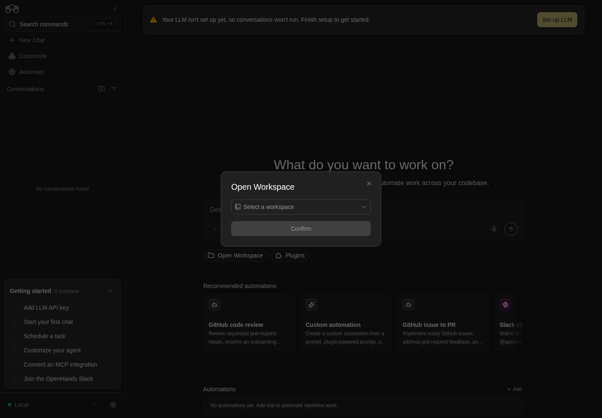

How to get to it
- Sidebar New Chat (
sidebar-conversations-link), which opens/conversations; the logo does the same (see F02). - Direct URL
/(unless a page is pinned as home, see F02) or/conversations. - Command menu (
Control+k,Meta+korcommand-menu-trigger): search "New chat", choose New chat. - Under the composer: Open Workspace (
open-workspace-button) or, once confirmed, the preview bar (home-git-control-bar-preview); Plugins (open-plugin-picker). - In the Open Workspace dialog: the combobox (
workspace-dropdown) and its footer + Add Workspace (add-workspaces-button) and Manage Workspaces (manage-workspaces-button, shown once any workspace or parent exists); in Add workspaces, the Favorites/Locations sidebar (folder-browser-sidebar-<name>). - Below the composer: recommended cards (
recommended-automation-rail-card-<id>), pinned cards (pinned-automation-card-<id>) and rows (running-automation-row-<id>) with their kebabs; + Add (home-automations-manage).
Before you start
Start with the common launch and health checks, then follow this family’s preconditions in order. Recipes share the fixtures and state named below.
Preconditions:
F03.llm-not-configured-bannerandF03.composer-blocked-without-llmneed a freshcontrol-openhands launch --newwith onlycontrol-openhands onboard --skipdone (nollm presetyet). Run them first.- Everything else: baseline state with
control-openhands llm preset deepseek(deepseek-flash active). - Workspace fixtures:
control-openhands fixture git-repo --name qa-f03-repoandcontrol-openhands fixture folder --name qa-f03-folder(both under<run>/workspace). - Automation fixtures (arranged through F22 import and F21 Turn on, not proof):
control-openhands fixture file --name qa-f03-pong.automation.json --content '{"version":1,"kind":"automation","spec":{"name":"QA_F03 Pong","trigger":{"type":"cron","schedule":"0 0 1 1 *","timezone":"UTC"},"enabled":true,"prompt":"Reply with the single word: pong. Do not run any tools."}}'and the same withqa-f03-beta/QA_F03 Beta. Runcontrol-openhands browser goto /automations, then for each file runcontrol-openhands browser click 'testid=automations-add-automation',control-openhands browser click 'testid=automations-import-automation',control-openhands browser upload 'testid=automations-import-file' "$OH_VERIFY_RUN/evidence/_fixtures/qa-f03-pong.automation.json",control-openhands browser click 'testid=import-automation-confirm',control-openhands browser wait 'testid=import-automation-modal' --state detached. Imports arrive disabled: turn each on withcontrol-openhands browser click '[data-testid^="automation-card-"] >> has-text=QA_F03 Pong >> role=button[name="Automation actions"]'andcontrol-openhands browser click 'role=list >> has-text=Export >> role=button[name="Turn on"]'. The yearly cron never fires by itself. - Blocked here:
F03.open-repository-dialog(OpenHands Cloud backend with a connected GitHub/GitLab/Bitbucket provider),F03.isolated-workspace-notice(isolated-runtime backend),F03.workspaces-unsupported(an Agent Server without/api/workspaces),F03.recommended-prompt-launch(a Tavily/Linear/Jira integration installed so some card has nothing missing).
Behavior inventory
39 stable behavior IDs and their expected behavior
- Starting work:
F03.home-entry-points/,/conversations, the sidebar New Chat and the command-menu item New chat show the launcher (home-chat-launcher) with the heading, subtitle and theDescribe an engineering task…composer. Read recipe ↓F03.composer-blocked-without-llmwith no LLM, Send is disabled and Enter creates nothing (the text stays editable). Read recipe ↓F03.draft-persistencethe home draft survives a reload and is cleared after a conversation is created. Read recipe ↓F03.home-model-command/model <profile>sent from home activates that LLM profile without creating a conversation. Read recipe ↓F03.launch-in-workspacesubmitting with a workspace picked showsCreating conversation…, opens/conversations/<id>, and the agent runs in that folder. Read recipe ↓F03.launch-without-workspacewith nothing picked, the conversation runs in a fresh per-conversation folder under the server home. Read recipe ↓F03.create-error-toastwhen creation fails, the loading toast is replaced by one error toast and the prompt is not lost. Read recipe ↓F03.plugin-pickerPlugins opens Attach plugins (catalog, search, Add/Remove switch,N selected, Done and X); the pill then shows a count badge. Read recipe ↓F03.launch-with-plugina conversation started with a plugin attached loads it; the selection resets afterwards. Read recipe ↓- Workspaces (local backend):
F03.open-workspace-dialogOpen Workspace opens a dialog with a workspace combobox; Confirm stays disabled until a pick; confirming swaps the pill for a preview bar that reopens the dialog; X and Escape close it. Read recipe ↓F03.workspace-dropdown-searchtyping filters workspaces; with more than one group, workspaces are grouped by parent with an Other group; no match (or no workspaces) showsNo workspaces yet. Read recipe ↓F03.selection-after-reloadafter a reload the preview bar is gone, but the dialog preselects the last workspace picked in its dropdown, confirmed or not: a pick closed with the X survives leaving for another page and coming back, and a reload. Read recipe ↓F03.workspace-modethe preview bar's mode menu switches Local Repo / New Worktree; the choice persists across reloads. Read recipe ↓F03.folder-browser+ Add Workspace opens Add workspaces at the server home with Favorites/Locations, Up and the current path; Add this directory adds and selects the folder, Add all subdirectories adds a parent whose children become workspaces, Cancel adds nothing. Read recipe ↓F03.folder-browser-locationsthe browser's Favorites (Home, plusworkspaceonce a no-folder conversation exists) and Locations (/) jump to that folder; Up is disabled at/. Read recipe ↓F03.manage-workspacesManage Workspaces lists workspaces and parents (with children); every Remove asks for confirmation; Cancel keeps, Confirm removes for good and clears the selection; with nothing left it readsYou don't have any workspaces yet.Read recipe ↓F03.open-repository-dialogon a Cloud backend, Open repository picks provider, repository and branch (blocked locally).F03.isolated-workspace-noticeon an isolated-runtime backend a status line explains the new isolated workspace and offers Clear host workspace (blocked locally).F03.workspaces-unsupportedon an Agent Server without workspace APIs the pill is disabled with a tooltip (blocked locally).- Automations on home:
F03.recommended-automations-raila horizontally scrolling rail of recommended automations with edge fades; cards with a setup form open/automations/new/<id>. Read recipe ↓F03.recommended-responder-choiceGitHub/Slack responder cards on a local backend first ask Choose how your responder should run. Read recipe ↓F03.responder-cloud-optionin that dialog Open OpenHands Cloud integrations openshttps://app.all-hands.dev/settings/integrationsin a new tab, closes the dialog and saves no secret; X closes it without a choice. Read recipe ↓F03.recommended-missing-integrationa card whose required integration is missing opens that integration's install dialog first. Read recipe ↓F03.recommended-hides-addeda catalog automation that already exists (matched by name, enabled or not) drops off the rail; deleting it brings the card back. Read recipe ↓F03.recommended-prompt-launcha card with no setup form and no missing integration creates a conversation that sends the automation prompt (blocked locally).F03.home-automations-listAutomations lists enabled automations with schedule, last run and status, a sparkline, + Add, andNo automations yet. Add one to automate repetitive work.when empty. Read recipe ↓F03.home-automation-linksa row opens/automations/<id>, a sparkline bar opens/automations/<id>?run=<runId>, + Add opens/automations. Read recipe ↓F03.home-run-tooltiphovering a row shows its trigger, status, last run and task. Read recipe ↓F03.cancel-in-flight-runCancel run appears while a run is pending or running and cancels it (Automation run cancelled). Read recipe ↓F03.turn-off-confirmationTurn off asksTurn off "<name>"? It will stop running on its schedule until you turn it back on.; Cancel keeps it on, Turn off disables it and drops it from home. Read recipe ↓F03.pinned-automations-gridPin to dashboard adds a card to Pinned automations (prompt, pills, status strip, Runs); the title opens the detail page; a deleted automation's card disappears. Read recipe ↓F03.pinned-card-linksa pinned card's sparkline bar opens/automations/<id>?run=<runId>, and Enter on its focused title opens the detail page. Read recipe ↓F03.pinned-reorder-dragdragging a pinned card's title row (Reorder <name>) onto another card reorders the pins, and the order survives a reload. Read recipe ↓F03.home-automations-view-morepast 10 rows View more/View all, past 6 pins View more/View less (not arranged).F03.automations-backend-downwith the automation service down, the rail, pinned grid and list are hidden and the composer still works. Read recipe ↓F03.phoneat 390 px the banner, launcher, rail, pinned grid, list and the workspace dialogs fit without horizontal overflow, and folder names stay readable. Read recipe ↓
Readable recipes
Read each script from top to bottom. Code is copied from the map; prose gives the action, expected observation, and conditions. <id>, <run> and similar placeholders stand for values from your own run. Short forms such as browser count continue the same control-openhands invocation; they are kept as documented.
Expected observations describe the recipe’s contract. Captures below selected recipes show representative real states from this snapshot; they do not mark every mapped behavior as passed. Follow cleanup before moving to another family.
No recipes match. Try another word or a behavior ID.
Starting work:
No-LLM banner #
- NoteOn a fresh run after
onboard --skip, run - Check
control-openhands browser text 'testid=home-llm-not-configured-banner' - Note:
Your LLM isn't set up yet, so conversations won't run. Finish setup to get started.andSet up LLM; - Do
control-openhands browser screenshot --feature F03.llm-not-configured-banner --name banner - NoteAt phone width (
control-openhands browser viewport phone), - Check
control-openhands browser bbox 'testid=home-llm-not-configured-banner'is inside the viewport (
F03.phone; the banner exists only beforellm preset); return with - Do
control-openhands browser viewport desktop - Check
control-openhands browser click 'testid=home-llm-not-configured-action' --expect-url '/settings/llm' - Notelands on
/settings/llm. - NoteRun the blocked-composer bullet and the draft bullet next (they also need no LLM); only then
- Arrange
control-openhands llm preset deepseek - Do
control-openhands browser goto / - Check
control-openhands browser count 'testid=home-llm-not-configured-banner'is
0.

The home page shows the composer, Open Workspace and recommended automation cards, with a banner asking for an LLM profile.
Representative documentation capture, not a complete run of this recipe or family. Captured on an isolated local backend at desktop viewport using the current main checkout.
How this screenshot was taken
canvas: 1.26.0 · agent server: 1.53.0 · sdk: 1.53.0 · automation: 1.19.0
OH_VERIFY_RUN="$OH_VERIFY_RUN" control-openhands browser goto /
OH_VERIFY_RUN="$OH_VERIFY_RUN" control-openhands browser wait testid=home-screen
OH_VERIFY_RUN="$OH_VERIFY_RUN" control-openhands browser screenshot --feature F03.llm-not-configured-banner --name home-without-profileBlocked composer #
- NoteStill without an LLM, run
- Do
control-openhands browser goto /(the banner's action left
/settings/llm), - Do
control-openhands browser type 'testid=chat-input' 'QA no llm' - Check
control-openhands browser enabled 'testid=home-chat-launcher >> testid=submit-button'(
false), - Do
control-openhands browser press Enter --selector 'testid=chat-input' - Check
control-openhands browser url(still
/) and - Check
control-openhands api GET '/api/conversations/search?limit=5'(
itemsis empty).
Draft #
- NoteWith text in the home composer,
- Do
control-openhands browser reload - Check
control-openhands browser text 'testid=chat-input'returns the same text;
- Do
control-openhands browser storage --sessionlists
oh:home-prompt-draft. - NoteThat the draft clears after a successful launch is checked in the first launch (Launch without a folder).
Entry points #
- Do
control-openhands browser goto /conversations - Check
control-openhands browser count 'testid=home-chat-launcher'is
1(same for/). - NoteFrom
/settings/secrets(control-openhands browser goto /settings/secrets), - Do
control-openhands browser press Control+k - Do
control-openhands browser type 'testid=command-menu >> role=combobox' 'New chat' - Check
control-openhands browser snapshot 'testid=command-menu'(one option
New chat Start a fresh OpenHands conversation. Go[selected]), - Do
control-openhands browser press Enter - Check
control-openhands browser url - Note:
/conversations. - NoteFrom
/settings/secrets(control-openhands browser goto /settings/secretsagain), - Check
control-openhands browser click 'testid=sidebar-conversations-link' --expect-url '/conversations(\?|$)' - Noteand
browser count 'testid=home-chat-launcher'is1.
/model on home #
- Check
control-openhands api GET /api/profilesshows
active_profiledeepseek-flash. - Do
control-openhands browser goto /(Entry points ended on
/conversations). - ExpectThe draft from the earlier bullets is still in the composer: clear it with
- Do
control-openhands browser fill 'testid=chat-input' ''(typing would append).
- Do
control-openhands browser type 'testid=chat-input' '/model deepseek-pro' - Do
control-openhands browser press Escape --selector 'testid=chat-input'(closes the slash menu),
- Do
control-openhands browser press Enter --selector 'testid=chat-input' - ExpectThe URL stays
/,chat-inputis empty, the composer's model pill (browser text 'testid=chat-input-llm-profile') readsdeepseek-pro,api GET /api/profilesshowsactive_profiledeepseek-pro, andapi GET '/api/conversations/search?limit=20'lists no new conversation. - NoteRestore with the same steps and
/model deepseek-flash.
Launch without a folder #
- Do
control-openhands browser goto /conversations(no workspace is picked yet; the pill reads Open Workspace), then fill
chat-inputwithReply with only the word ok.and clicktestid=home-chat-launcher >> testid=submit-buttonwith--expect-url '/conversations/[^/]+$'. - Wait
control-openhands conversation wait <id> --timeout 180 - Notereports
workspace<run>/private/home/workspace/project/<id without dashes>. - ExpectThis is the first successful launch:
- Check
control-openhands browser click 'testid=sidebar-conversations-link' --expect-url '/conversations$'shows an empty
chat-inputandbrowser storage --sessionno longer listsoh:home-prompt-draft.
Plugins #
- Do
control-openhands browser goto /conversations(a fresh page),
- Do
control-openhands browser click 'testid=open-plugin-picker' - Wait
control-openhands browser wait 'testid=plugin-picker-loading' --state hidden --timeout 60000 - Notecards
plugin-picker-card-<name>are listed. - Do
control-openhands browser fill 'testid=plugin-picker-search-input' weather - Noteleaves one card (
control-openhands browser count '[data-testid^="plugin-picker-card-"]'is1);zzz-nonemakesbrowser text 'testid=plugin-picker'readNo plugins available.Withweatheragain, - Do
control-openhands browser click 'testid=plugin-picker-toggle-city-weather' --hover-first 150 - Note: the footer reads
1 selectedand - Check
control-openhands browser attr 'testid=plugin-picker-toggle-city-weather' aria-labelis
Remove. - Do
control-openhands browser click 'testid=plugin-picker-done' - Check
control-openhands browser text 'testid=plugin-picker-count'is
1; reopening keeps the switch checked, andtestid=plugin-picker-closealso closes it. - NoteOn hover-swapping cards, use
--hover-first 150for subsequent Add/Remove clicks too and assert both the label andaria-checked; the shared index gotcha explains why a plain mouse click can be swallowed (including at phone width).
Plugin reaches the agent #
- NoteWith
city-weatherattached, start the no-folder launch above without itsgoto(a page load drops the attached plugin), then - Check
control-openhands api GET '/api/conversations/<id>/events/search?limit=20' - Note: the system prompt contains
city-weather:now(a conversation started without the plugin has none). - NoteBack on
/conversations(control-openhands browser goto /conversations), - Check
control-openhands browser count 'testid=plugin-picker-count'is
0.
Creation failure #
- NoteFill
chat-inputwithQA error path, run - Do
control-openhands service stop agent-server - Notethen clear the observation window with
- Check
control-openhands browser toasts --clear - NoteStart genuine temporal evidence before submitting:
- Do
control-openhands browser record start --feature F03.create-error-toast --name failed-launch - Do
control-openhands browser click 'testid=home-chat-launcher >> testid=submit-button' --observe 'role=status' --observe-ms 500 - Notethen immediately
- Check
control-openhands browser screenshot --feature F03.create-error-toast --name toasts(this early still may show the loading state).
- NoteKeep recording and wait for the real error with
- Wait
control-openhands browser wait-text 'HTTP request failed (502 Bad Gateway)' --timeout 15000 - Wait
control-openhands browser wait 'role=status >> has-text=Creating conversation…' --state hidden --timeout 15000 - Note
browser toastsandbrowser toasts --historyshowCreating conversation…replaced by exactly one error toast, such asHTTP request failed (502 Bad Gateway): "Bad Gateway: connect ECONNREFUSED 127.0.0.1:<port+1>"(transport detail is preserved by design, #17985). - ExpectCount every new error toast in this window; an additional toast is a failure to record, not one to discard.
browser text 'testid=chat-input'still readsQA error pathandbrowser enabled 'testid=home-chat-launcher >> testid=submit-button'istrue. - NoteStop the recording with
- Do
control-openhands browser record stop - Noteinspect its loading→error transition and recovered prompt, paired with the full screenshot.
- NoteBring the stack back with
- Do
control-openhands restart - Do
control-openhands browser reload - Notethe prompt remains
QA error path.
Workspaces:
Folder browser #
- Do
control-openhands browser click 'testid=open-workspace-button' - Notebefore any workspace is picked,
- Check
control-openhands browser snapshot 'role=dialog'shows
Open Workspace,combobox "Select a workspace"andbutton "Confirm" [disabled](F03.open-workspace-dialog). - Do
control-openhands browser click 'testid=workspace-dropdown' - Notewith no saved workspace,
- Check
control-openhands browser text 'testid=workspace-dropdown-empty'is
No workspaces yet, above + Add Workspace (F03.workspace-dropdown-search;browser screenshot --feature F03.workspace-dropdown-search --name empty-list). - Do
control-openhands browser click 'testid=add-workspaces-button' - Check
control-openhands browser text 'testid=folder-browser-current-path'is
<run>/private/home. - Do
control-openhands browser click 'testid=folder-browser-up' - Notetwice (now
<run>) and - Do
control-openhands browser click 'testid=folder-browser-entry-workspace' - Check
control-openhands browser text 'testid=folder-browser-list'lists
qa-f03-folderandqa-f03-repoasFolder(browser screenshot --feature F03.folder-browser --name workspace-dir). - NoteThen, reopening the browser each time with
browser click 'testid=workspace-dropdown'andbrowser click 'testid=add-workspaces-button'(the Open Workspace dialog stays open behind it; the browser always restarts at<run>/private/home, so repeat Up twice andfolder-browser-entry-workspace):
Alternative paths (repeat the preparation above for each):
- Do
control-openhands browser click 'testid=folder-browser-cancel' - Note:
browser count 'testid=folder-browser-modal'is0and the selection is unchanged.
- Do
- Do
control-openhands browser click 'testid=folder-browser-add-all-subdirs' - Note: the browser closes; after
browser click 'testid=workspace-dropdown'the dropdown offersqa-f03-folderandqa-f03-repo(browser snapshot 'role=dialog':option "qa-f03-folder",option "qa-f03-repo",button "Manage Workspaces").
- Do
- Do
control-openhands browser click 'testid=folder-browser-use'(Add this directory) at
<run>/workspace: - Check
control-openhands browser value 'testid=workspace-dropdown'is
workspace(auto-selected).
- Do
Favorites and locations #
- NoteWith the browser open,
- Check
control-openhands browser testids 'testid=folder-browser-sidebar'lists
folder-browser-sidebar-home,folder-browser-sidebar-/and, after any no-folder conversation,folder-browser-sidebar-workspace. - Do
control-openhands browser click 'testid=folder-browser-sidebar-/' - Notemakes
browser text 'testid=folder-browser-current-path'read/and - Check
control-openhands browser enabled 'testid=folder-browser-up' - Note
false;folder-browser-sidebar-workspacegoes to<run>/private/home/workspaceandfolder-browser-sidebar-homeback to<run>/private/home. - NoteClose with
testid=folder-browser-cancel.
Open Workspace #
- ExpectThe dialog is still open from the previous bullets, with
workspaceselected (its disabled Confirm before a pick is checked at the start of Folder browser). - Do
control-openhands browser click 'testid=workspace-dropdown' - Do
control-openhands browser click 'testid=workspace-dropdown-menu >> role=option[name="qa-f03-repo"]' - Check
control-openhands browser enabled 'testid=workspace-launch-button'(
true), - Do
control-openhands browser click 'testid=workspace-launch-button' - ExpectThe dialog closes and
- Check
control-openhands browser text 'testid=home-git-control-bar-preview'is
qa-f03-repoandLocal Repo(browser screenshot --feature F03.open-workspace-dialog --name preview-bar). - Do
control-openhands browser click 'testid=home-git-control-bar-preview >> role=button[name*="qa-f03-repo"]' - Notereopens the dialog with
browser value 'testid=workspace-dropdown'qa-f03-repo; - Do
control-openhands browser click 'testid=close-open-workspace-dialog' - Notecloses it, and so does
- Do
control-openhands browser press Escape

Open Workspace dialog with an empty Select a workspace field and disabled Confirm button.
Representative documentation capture, not a complete run of this recipe or family. Captured on an isolated local backend at desktop viewport using the current main checkout.
How this screenshot was taken
canvas: 1.26.0 · agent server: 1.53.0 · sdk: 1.53.0 · automation: 1.19.0
OH_VERIFY_RUN="$OH_VERIFY_RUN" control-openhands browser goto /
OH_VERIFY_RUN="$OH_VERIFY_RUN" control-openhands browser wait testid=home-screen
OH_VERIFY_RUN="$OH_VERIFY_RUN" control-openhands browser click testid=open-workspace-button
OH_VERIFY_RUN="$OH_VERIFY_RUN" control-openhands browser wait role=dialog
OH_VERIFY_RUN="$OH_VERIFY_RUN" control-openhands browser screenshot role=dialog --feature F03.open-workspace-dialog --name open-workspaceLaunch in a folder #
- NoteOpen Workspace (above) left
qa-f03-repoconfirmed in the preview bar. - Do
control-openhands browser fill 'testid=chat-input' 'Run pwd and reply with only its output.' - Do
control-openhands browser click 'testid=home-chat-launcher >> testid=submit-button' --observe 'text=Creating conversation' --expect-url '/conversations/[^/]+$' - Note
observedshowsCreating conversation…then<absent>; the returned URL holds<id>. - Wait
control-openhands conversation wait <id> --timeout 180 - Notereports
workspace<run>/workspace/qa-f03-repo, and - Check
control-openhands conversation events <id> --kinds ObservationEvent,MessageEventshows the terminal observation and the reply
<run>/workspace/qa-f03-repo.
Search, groups and empty #
- Do
control-openhands browser goto /(Launch in a folder left its conversation),
- Do
control-openhands browser click 'testid=open-workspace-button' - Do
control-openhands browser click 'testid=workspace-dropdown' - NoteWith the dropdown open,
- Do
control-openhands browser fill 'testid=workspace-dropdown' repo - Check
control-openhands browser text 'testid=workspace-dropdown-menu'is
qa-f03-repo. - NoteWith the parent and the standalone
workspacesaved, the menu text isworkspace,qa-f03-folder,qa-f03-repo,Other,workspaceand - Check
control-openhands browser count 'testid=workspace-group-header'is
2(--name grouped). - Do
control-openhands browser fill 'testid=workspace-dropdown' zzz-noneshows the empty state:
- Check
control-openhands browser text 'testid=workspace-dropdown-empty'is
No workspaces yet(--name no-match) and - Check
control-openhands browser count 'testid=add-workspaces-button'is still
1. - NoteClear with
- Do
control-openhands browser fill 'testid=workspace-dropdown' '' - Note
browser count 'testid=workspace-dropdown-empty'is0again.
Reload #
- ExpectAfter confirming qa-f03-repo,
- Do
control-openhands browser reload - Check
control-openhands browser count 'testid=home-git-control-bar-preview'is
0and the pill is back. - NoteClick it;
- Check
control-openhands browser value 'testid=workspace-dropdown'is
qa-f03-repo(sessionStorageoh:home-selected-workspace-path). - ExpectAn unconfirmed pick persists the same way:
- Do
control-openhands browser click 'testid=workspace-dropdown' - Do
control-openhands browser click 'testid=workspace-dropdown-menu >> role=option[name="qa-f03-folder"]'(value
qa-f03-folder), then - Do
control-openhands browser click 'testid=close-open-workspace-dialog'(never Confirm or Launch): the preview count stays
0and - Do
control-openhands browser storage --session --valuesshows
oh:home-selected-workspace-pathending in/workspace/qa-f03-folder. - NoteLeave and come back with
- Do
control-openhands browser goto /settings(lands on
/settings/agents,browser count 'testid=home-screen'0) and - Do
control-openhands browser goto /conversations - Noteclick
open-workspace-button:browser value 'testid=workspace-dropdown'isqa-f03-folder(browser screenshot --feature F03.selection-after-reload --name unconfirmed-pick-restored). - NoteClose with the X,
- Do
control-openhands browser reload - Noteclick the pill again: the value is still
qa-f03-folderandbrowser enabled 'testid=workspace-launch-button'istrue. - NoteRestore the state the next bullets start from with
browser click 'testid=workspace-dropdown', - Do
control-openhands browser click 'testid=workspace-dropdown-menu >> role=option[name="qa-f03-repo"]'(value
qa-f03-repo, the storage value ends in/workspace/qa-f03-repo) and - Do
control-openhands browser click 'testid=workspace-launch-button' - Note: the dialog closes and
- Check
control-openhands browser text 'testid=home-git-control-bar-preview'is
qa-f03-repoandLocal Repoagain.
Workspace mode #
- NoteWith the preview bar showing,
- Do
control-openhands browser click 'testid=workspace-mode-selector' - Check
control-openhands browser snapshot 'testid=workspace-mode-selector-menu'(
menuitemradio "Local Repo" [checked],menuitemradio "New Worktree"), - Do
control-openhands browser click 'testid=workspace-mode-selector-option-new_worktree' - Note
browser storage --valuesshowsopenhands-last-local-workspace-modenew_worktree; afterbrowser reloadand reconfirming the workspace,browser text 'testid=home-git-control-bar-preview'readsqa-f03-repoandNew Worktree. - NoteRestore with
testid=workspace-mode-selector-option-local_repo.
Manage #
- NoteWith the parent and
workspacesaved: - Do
control-openhands browser click 'testid=workspace-dropdown' - Do
control-openhands browser click 'testid=manage-workspaces-button' - Check
control-openhands browser testids 'testid=manage-workspaces-modal'shows
manage-workspaces-row-workspace,manage-workspaces-parent-row-workspace,manage-workspaces-child-qa-f03-folderandmanage-workspaces-child-qa-f03-repo. - Do
control-openhands browser click 'testid=manage-workspaces-remove-workspace' - Check
control-openhands browser text 'testid=confirmation-modal'reads
Remove "workspace" from your saved workspaces?. - Do
control-openhands browser click 'testid=confirmation-modal >> testid=cancel-button' - Notekeeps the row (
browser count 'testid=manage-workspaces-row-workspace'is1); repeat Remove and - Do
control-openhands browser click 'testid=confirmation-modal >> testid=confirm-button' - Note: the count is
0. - NoteRemoving a workspace clears the dialog's selection only when it was the selected one: with
qa-f03-reposelected, - Do
control-openhands browser click 'testid=manage-workspaces-done' - Noteleaves
browser value 'testid=workspace-dropdown'atqa-f03-repo. - ExpectAfter
browser reloadthe dropdown lists only the two children, and - Check
control-openhands api GET /api/workspacesshows
workspaces: []plus the parent. - NoteCleanup proves Remove parent:
- Do
control-openhands browser click 'testid=manage-workspaces-remove-parent-workspace'reads
Remove "workspace" and its 2 child workspaces?; Confirm leavesbrowser text 'testid=manage-workspaces-list'atYou don't have any workspaces yet.andapi GET /api/workspacesempty; because the selectedqa-f03-repobelonged to that parent, afterbrowser click 'testid=manage-workspaces-done'browser value 'testid=workspace-dropdown'is empty andbrowser enabled 'testid=workspace-launch-button'isfalse.
Automations on home (fixtures imported and turned on):
Recommended rail #
- NoteOn
/afterbrowser reload, - Check
control-openhands browser attr 'testid=recommended-automations-rail-fade-left' data-visibleis
falseand...-fade-rightistrue; - Do
control-openhands browser scroll 'testid=recommended-automation-rail-card-github-agents-md-maintainer' - Noteturns the left fade
true(browser screenshot --feature F03.recommended-automations-rail --name scrolled-end). - Check
control-openhands browser click 'testid=recommended-automation-rail-card-custom-automation' --expect-url 'automations/new' - Notelands on
/automations/new/custom-automation(github-pr-reviewer,github-issue-to-prandnews-digestdo the same).
Responder choice #
- NoteFrom
/conversations(control-openhands browser goto /conversations; the rail click left/automations/new/...), - Do
control-openhands browser click 'testid=recommended-automation-rail-card-github-agents-md-maintainer' - Check
control-openhands browser snapshot 'testid=responder-deployment-modal'shows
Choose how your responder should run, Continue with local setup and Open OpenHands Cloud integrations (slack-channel-monitortoo). - Do
control-openhands browser click 'testid=responder-deployment-continue-local' - Notesaves an
OPENHANDS_URLsecret and opens the GitHub MCP install dialog (browser snapshot 'role=dialog':dialog "GitHub", Personal access token); - Do
control-openhands browser click 'role=dialog >> role=button[name="Cancel"]' - Notecloses it on
/conversations. - NoteDelete
OPENHANDS_URLafterwards in Settings → Secrets (F14): - Do
control-openhands browser goto /settings/secrets - Do
control-openhands browser click 'testid=secret-item >> has-text=OPENHANDS_URL >> testid=delete-secret-button' - Do
control-openhands browser click 'role=dialog >> role=button[name="Confirm"]'
Cloud option #
- NoteFrom
/conversations(control-openhands browser goto /conversations), - Do
control-openhands browser click 'testid=recommended-automation-rail-card-slack-channel-monitor' - Do
control-openhands browser click 'testid=responder-deployment-open-openhands-cloud' - Note:
browser count 'testid=responder-deployment-modal'is0, - Do
control-openhands browser tabslists a second page
https://app.all-hands.dev/settings/integrations(it can take a second to appear: reruntabsbefore concluding) (close it withcontrol-openhands browser close-tab 1), andapi GET /api/settings/secretshas noOPENHANDS_URL. - NoteReopen the card and
- Do
control-openhands browser click 'testid=responder-deployment-modal-close' - Note: the dialog is gone and nothing else opens.
Missing integration #
- Do
control-openhands browser click 'testid=recommended-automation-rail-card-research-brief-writer' - Noteopens
dialog "Tavily"(Commandnpx -y tavily-mcp, Tavily API key); Cancel closes it and no conversation is created.
Already added #
- Check
control-openhands browser count 'testid=recommended-automation-rail-card-news-digest'is
1. - NoteImport
qa-f03-news.automation.json(same fixture recipe as Preconditions, with"name":"Daily news digest"; it stays disabled),browser goto /,browser wait 'testid=recommended-automation-rail-card-custom-automation': the news-digest count is0. - NoteDelete it on
/automations(control-openhands browser goto /automations, then the Cleanup recipe below withhas-text=Daily news digest); back on/(control-openhands browser goto /) the count is1again.
Activity list #
- Wait
control-openhands browser wait '[data-testid^="running-automation-row-"]' - Check
control-openhands browser text 'testid=running-automations-list' - Note: both fixtures with
0 0 1 1 *andNo activity yet(browser screenshot --feature F03.home-automations-list --name list); no row has a sparkline link yet (the run-bar link is checked after the first run, in the next bullet). - Do
control-openhands browser click '[data-testid^="running-automation-row-"] >> has-text=QA_F03 Beta >> role=link' --expect-url '/automations/[^/?]+' - Noteopens the detail page; after
- Do
control-openhands browser goto / - Check
control-openhands browser click 'testid=home-automations-manage' --expect-url '/automations$' - Noteopens the dashboard.
Row menu, Run now and Cancel #
- Do
control-openhands browser goto /(the Manage link left the dashboard), then
- Do
control-openhands browser click '[data-testid^="running-automation-row-"] >> has-text=QA_F03 Pong >> [data-testid^="running-automation-menu-"]' - Check
control-openhands browser snapshot '[data-testid^="running-automation-menu-panel-"]' - Note: Run now, View, Edit, Turn off, separator, Pin to dashboard.
- Check
control-openhands browser click '[data-testid^="running-automation-run-"]' --observe 'role=status' - Noteobserves
Automation dispatched. - NoteReopen the menu:
Run now [disabled]and Cancel run. - Do
control-openhands browser click '[data-testid^="running-automation-cancel-"]' - Check
control-openhands browser toastsreads
Automation run cancelled; - Check
control-openhands api GET /api/automation/v1/<automation-id>/runs(id from
browser testids --filter running-automation-row) showsCANCELLED, and afterbrowser reloadthe row readsJust now · Cancelled. - NotePong now has a run:
- Do
control-openhands browser click '[data-testid^="running-automation-activity-"] >> role=link' --expect-url '/automations/[^/?]+\?run=' - Noteopens it; return with
- Do
control-openhands browser goto /
Tooltip #
- Do
control-openhands browser tooltip '[data-testid^="running-automation-row-"] >> has-text=QA_F03 Pong'returns
QA_F03 Pong,Trigger 0 0 1 1 *,Status Cancelled,Last run Just now,Task Cancelled by user.
View and Edit #
- NoteFrom the Beta row menu,
- Check
control-openhands browser click '[data-testid^="running-automation-view-"]' --expect-url '/automations/[^/?]+$' - Noteopens the detail page.
- NoteBack on
/(control-openhands browser goto /), reopen the menu and click[data-testid^="running-automation-edit-"]: the Edit automation modal showsbrowser value 'label=Name'QA_F03 Beta. - Do
control-openhands browser fill 'label=Prompt' 'Reply with the single word: beta2. Do not run any tools.' - Check
control-openhands browser click 'testid=edit-automation-save' --observe 'role=status'(
Automation updated);api GET /api/automation/v1/<automation-id>shows the new prompt. - ExpectA timeout above 1800 is refused client-side with
Timeout cannot exceed 1800 seconds.
Turn off #
- NoteFrom the Beta row menu click
[data-testid^="running-automation-turn-off-"]; - Check
control-openhands browser snapshot 'role=dialog'reads
Turn off "QA_F03 Beta"? It will stop running on its schedule until you turn it back on.with Cancel and Turn off. - Do
control-openhands browser click 'role=dialog >> role=button[name="Cancel"]' - Notekeeps it enabled; repeat and
- Do
control-openhands browser click 'role=dialog >> role=button[name="Turn off"]' - Note
browser reload: - Check
control-openhands browser count '[data-testid^="running-automation-row-"] >> has-text=QA_F03 Beta'is
0and the API showsenabled: false. - NoteTurn it back on from
/automations(Preconditions) for the pin checks.
Pin #
- Do
control-openhands browser goto /(turning Beta back on left
/automations); from Pong's row menu click[data-testid^="running-automation-pin-"]; - Check
control-openhands browser text 'testid=pinned-automations-dashboard'shows
Pinned automations,QA_F03 Pong, the prompt,cronand the last status;browser storage --valuesholds the id underoh:home-pinned-automations:<backend>:-. - NotePin Beta too;
- Do
control-openhands browser eval "[...document.querySelectorAll('[data-testid^=pinned-automation-card-]')].map(e=>e.innerText.split('\n')[0]).join(',')"is
QA_F03 Pong,QA_F03 Beta. - Do
control-openhands browser click '[data-testid^="pinned-automation-card-"] >> role=link[name="QA_F03 Pong"]' --expect-url '/automations/[^/?]+$' - Noteopens the detail page.
Pinned menu #
- Do
control-openhands browser goto /(the Pin bullet ends on Pong's detail page), then
- Do
control-openhands browser click '[data-testid^="pinned-automation-card-"] >> has-text=QA_F03 Beta >> [data-testid^="pinned-automation-menu-"]'lists Run now, View, Edit, Turn off and Unpin from dashboard.
[data-testid^="pinned-automation-run-"]toastsAutomation dispatched; reopen and[data-testid^="pinned-automation-cancel-"]toastsAutomation run cancelled(the run isCANCELLED). - NoteReopen and click
[data-testid^="unpin-automation-"]; afterbrowser reloadonlyQA_F03 Pongis pinned and Beta stays in the list.
Pinned links #
- NoteWith Pong pinned and run once,
- Do
control-openhands browser click '[data-testid^="pinned-automation-card-"] >> has-text=QA_F03 Pong >> [data-testid^="pinned-automation-activity-"] >> role=link' --expect-url '/automations/[^/?]+\?run=' - Noteopens the run.
- NoteBack on
/(control-openhands browser goto /), - Do
control-openhands browser focus '[data-testid^="pinned-automation-card-"] >> role=link[name="QA_F03 Beta"]' - Do
control-openhands browser press Enter - Wait
control-openhands browser wait-url '/automations/[^/?]+$' - Noteopens Beta's detail page (pin Beta again first if it was unpinned).
Reorder #
- Do
control-openhands browser goto /(Pinned links ends on Beta's detail page).
- NoteWith Pong and Beta pinned (order
QA_F03 Pong,QA_F03 Beta, side by side at desktop), read the Beta handle and Pong card boxes with - Check
control-openhands browser bbox '[data-testid^="pinned-automation-card-"] >> has-text=QA_F03 Beta >> [data-testid^="pinned-automation-drag-"]' - Check
control-openhands browser bbox '[data-testid^="pinned-automation-card-"] >> has-text=QA_F03 Pong' - Notethen drag the handle onto the left fifth of Pong's card:
- Do
control-openhands browser drag '[data-testid^="pinned-automation-card-"] >> has-text=QA_F03 Beta >> [data-testid^="pinned-automation-drag-"]' --by -522,0 --steps 20(at 1440×1000 the handle centre is x≈1065 and Pong's card spans x 486–864).
- ExpectThe order eval from the Pin bullet reads
QA_F03 Beta,QA_F03 Pong,oh:home-pinned-automations:<backend>:-lists Beta's id first, and the order survivesbrowser reload. - NoteDrag Pong's handle the same way to restore.
- ExpectThe target form
browser drag <handle> <card> [--position before]does not reorder (the drop lands before the drag-over position is committed).
Backend down #
- Do
control-openhands service stop automation - Do
control-openhands browser reload - Notethen
browser countontestid=running-automations-list,testid=pinned-automations-dashboardandtestid=recommended-automations-rail: all0, no toast, composer usable. - Do
control-openhands restart - Noteand
browser reloadbring them back.
Phone and cleanup:
Phone #
- Do
control-openhands browser viewport phone - Check
control-openhands browser bbox 'testid=pinned-automations-dashboard' - Noteand
... 'testid=running-automations-list'(358 px wide,pageHorizontalOverflowfalse),browser screenshot --feature F03.phone --name automations(the banner was checked at phone width in the No-LLM banner bullet). - NoteOpen Workspace:
- Do
control-openhands browser click 'testid=open-workspace-button' - Notethen
browser bbox 'testid=open-workspace-dialog-body'is inside the viewport. - NoteFolder browser: arrange a long name first with
- Arrange
control-openhands fixture folder --name qa-f03-folder-with-a-name-too-long-for-a-phone(it lands in
<run>/workspace), then - Do
control-openhands browser click 'testid=workspace-dropdown' - Do
control-openhands browser click 'testid=add-workspaces-button' - Do
control-openhands browser eval "(()=>{const b=document.querySelector('[data-testid=folder-browser-entry-workspace] span span.truncate');return b.getBoundingClientRect().width})()"is greater than
0(about 67). - Do
control-openhands browser click 'testid=folder-browser-up' - Notetwice (now
<run>) and - Do
control-openhands browser click 'testid=folder-browser-entry-workspace' - Do
control-openhands browser eval "(()=>{const b=document.querySelector('[data-testid=folder-browser-entry-qa-f03-folder-with-a-name-too-long-for-a-phone] span span.truncate');return [b.scrollWidth>b.clientWidth,getComputedStyle(b).textOverflow]})()" - Note:
[true,"ellipsis"](about 109 of 293 px shown). - Do
control-openhands browser screenshot --feature F03.phone --name folder-namesshows each name beside
Folderunder separateNameandKindheaders, the long one cut toqa-f03-folder-w…. - NoteClose with
- Do
control-openhands browser click 'testid=folder-browser-cancel' - Do
control-openhands browser click 'testid=close-open-workspace-dialog' - Notethen return with
- Do
control-openhands browser viewport desktop
Cleanup #
- NoteDelete both fixtures on
/automations(control-openhands browser goto /automations; F21: kebabrole=list >> has-text=Export >> role=button[name="Delete"], thenrole=heading[name="Delete automation"] >> xpath=.. >> role=button[name="Delete"]). - NoteOn
/(control-openhands browser goto /),browser count 'testid=pinned-automations-dashboard'is0andbrowser text 'testid=running-automations-empty-hint'isNo automations yet. Add one to automate repetitive work.
Gotchas and known limits
- Once a workspace is confirmed,
open-workspace-buttonis not rendered (the preview bar replaces it): a click on it waits the full 30 s. Reopen throughhome-git-control-bar-preview, or reload. - A pick in the workspace dropdown is stored in sessionStorage at once, before Confirm or Launch, and closing the dialog with the X keeps it: a bullet that needs the earlier workspace selected must pick it again instead of relying on the last confirmation.
control-openhands workspace openandconversation start --workspacesave that folder as a standalone workspace (api GET /api/workspaceslists it underworkspaces). When another family used them first on the same stack, Add all subdirectories leaves those folders out of theworkspaceparent and the dropdown is grouped: options readworkspace, qa-f03-repoandOther, qa-f18-repo.role=option[name="qa-f03-repo"]still matches (substring), but the menu text and theworkspace-group-headercount2in the Search bullet assume F03's own fixtures only.- Folder rows navigate on a single click; there is no path field. The browser starts at the server home,
<run>/private/home, two levels below<run>. After any conversation without a workspace,<run>/private/home/workspaceexists: it shows as aworkspacerow and, after the next page load, aworkspacefavorite (folder-browser-sidebar-workspace), which is not<run>/workspace. - A workspace and its parent can share a name (
workspace); their test ids differ only by prefix (manage-workspaces-row-vsmanage-workspaces-parent-row-). chat-inputis a contenteditablediv: it stays editable when the composer is "disabled"; assert the Send button and the absence of a new conversation instead.conversation startwithout--staynavigates home and loses a picked workspace and plugins; drive the submit button as above.- Responder Continue with local setup writes an
OPENHANDS_URLsecret; delete it so F14 counts stay clean. - The rail lists about 15 cards (proven ones, then conversation launchers such as
research-brief-writer);browser testidsreports only the first few, so check a card withbrowser count 'testid=recommended-automation-rail-card-<id>'. Any automation whose name matches a card (Daily news digest) hides that card, so avoid catalog names in fixtures. - The home draft (
oh:home-prompt-draft) survives the no-LLM bullets;browser typeappends to it, sobrowser fill 'testid=chat-input' ''before typing a slash command. - Imported automations arrive disabled and home lists only enabled ones; turn them on before looking for rows. A run dispatched from home and then cancelled still leaves a
QA_F03 Pong — <date>conversation in the sidebar. - With the Agent Server stopped, a reload does not render home at all; trigger the error path before reloading, then
restart. - Deleting the last automation leaves its id in the pinned localStorage key (pruning skips an empty list); the grid still hides it.
- Pinned cards reorder only by mouse drag; there is no keyboard or menu alternative. Drive it with
browser drag <handle> --by DX,DY --steps 20;browser drag <handle> <target>reports ok but leaves the order unchanged. VITE_HOME_AUTOMATIONS_DEMO=true(build-time) swaps the home automation sections for demo data; never verify against such a build.- When the Agent Server is stopped, background refetches can add a generic
An error occurredtoast (#18051). ForF03.create-error-toast, retain the complete video and toast history and report any extra toast with its timing; do not waive it from the count. - The workspace combobox uses one message for an empty list and for a search with no match: both read
No workspaces yet(workspace-dropdown-empty), with + Add Workspace still below it (#18037).
Source paths: src/routes/home.tsx, src/routes/index-home.tsx, src/components/features/home/, src/components/features/plugins/plugin-picker-modal.tsx, src/components/features/automations/recommended-automations-launcher.tsx, src/hooks/use-home-pinned-automations.ts, src/hooks/use-home-automation-actions.ts, src/utils/recommended-automation-rail.ts, src/components/features/automations/responder-deployment-modal.tsx.